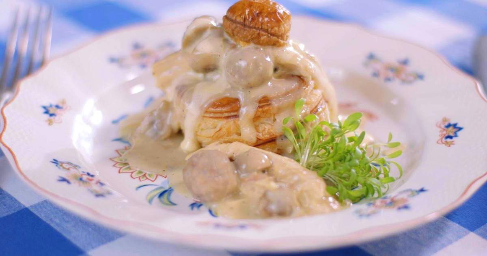

Vol-au-vent
Voor 2 personen

Ingrediënten
- 2 stengels selder
- 1 dikke wortel
- 1 preistengel
- 1 teentje look
- Anderhalve gehakte ui
- 2.5 teentjes look
- 2 takjes tijm
- 2 laurierblaadjes
- 1 takje rozemarijn
- Halve bussel peterseliestengels
- Zout
- 7.5 bolletjes zwarte peper
- 1 kruidnagel
- Halve hoevekip
- 1 vel bladerdeeg
- Helft van eigeel
- Beetje water
- 150 g gehakt
- Half ei
- Halve eetlepel broodkruim
- Peper
- 125 g kleine Parijse champignons
- Half klontje
- 155g boter
- 40 g bloem
- 3/4e liter kippenbouillon die je net zelf hebt gemaakt
- Scheutjes madeirawijn of sherry
- 3/4e dl room
- Halve citroen
- Nootmuskaat
- Anderhalve eierdooier
- 1 dopje witte wijn
- Half dopje water
- Snuifjes cayennepeper
- Snuifjes zout
Bereidingswijze
- Breng een ruime hoeveelheid water aan de kook. Spoel alle groenten, snij ze grof en doe ze in de grote pot
met water.
- Meng het gehakt, samen met een ei en het broodkruim. Kruid met wat peper van de molen en zout. Rol het
vleesmengsel tot identieke kleine balletjes van ongeveer een centimeter diameter.
- Pluk al het vlees van het karkas van de kip. Beslis hoe je de kip wil serveren: in eerder grote stukken,
hapklare brokken of extra fijn. Zet het vlees even opzij.
- Lepel wat luchtige hollandaise over elk koninginnenhapje en zet het dekseltje van bladerdeeg erbovenop.